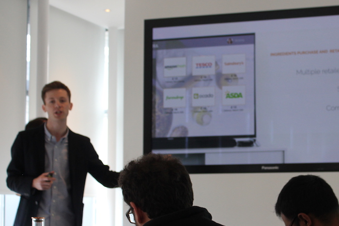
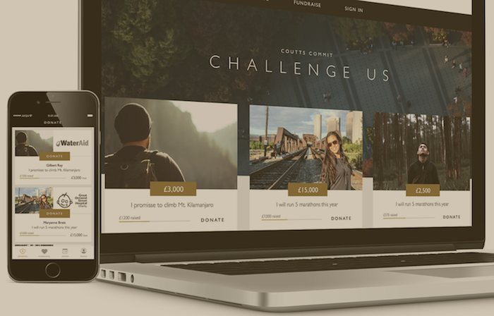
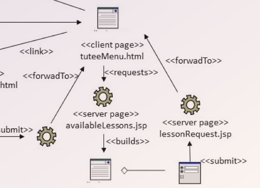

I'm working on a proper portfolio, I swear. In the meantime you can find here a few links to some projects I helped build.
You don't have so much time, I know. So I grouped them in chunks depending on how much time you have, hopefully this will help a bit.
AdCall is a concept for a new kind of online advertising banner. Using WebRTC, it allows for a click to call action with the aim of increasing conversions. It's built with a Node backend and deployed on Heroku.

UK public spends in average 1.5 hours every week watching cooking shows yet ready meals are on the rise. At AKQA we partnered with Amazon and created an app that allows viewers to buy the ingredients of the recepies they are seeing with their Fire TV. The deck is password-protected. Email me to unlock the magic.
Pop-up shops are growing in the UK double digit, yet they are not on the map. Born at AKQA, we designed Snicket, an app that allows the discovery of local pop-ups. Merchants just need to link their Instagram account making the onboarding process quicker than ever!
Explorer James Redden went to the North Pole in May 2016. At UCL, we partnered with Microsoft to create a unique web experience allowing everyone to follow his expedition. Leveraging the adata collected on a Microsoft Band, the immersive digital platform helped James raise money for a number of charities.
AuctionBay is an auction website similar to eBay. But better looking. We built everything from the ground up using a PHP backend. The purpose was to design a database in third normal form at least. It features some complex queries.
In a previous life I used to work in broadcasting, initially founding the first Web TV in Venice, Tg Veneziaedizioni, then working at the regional broadcaster Rete Veneta. I was the producer and host of a weekly programme called Venezia in Campo.

Philantropy doesn't need to be a secret commitment. Consulting a leading UK private bank, we designed at AKQA a digital platform that allows the banks' clients to help charitable causes whilst networking in a close, exclusive environment. The report is password protected. Email me to see more.
Flying with children is often seen as a stressful operation. At AKQA, we helped a major British airline define all key painpoints of the journey and designed the ultimate flying app for children. The report is password protected. Email me to discover more.
PeerWise is an e-learning platform developed by the University of Auckland and allows students to test each other and consolidate what they learn. However, it's only available on desktop. I redesigned it to make it more relevant to today's university students.

Who doesn't love UML? You can deep dive into this report that uses the most obscure UML diagrams to show that yes, OMG approved them and someone is using them.
One of my first programming projects, Sanus is a patient management system developed in Java using the Swing library for the UI. It features an SQLite databse for storing patient and user data.